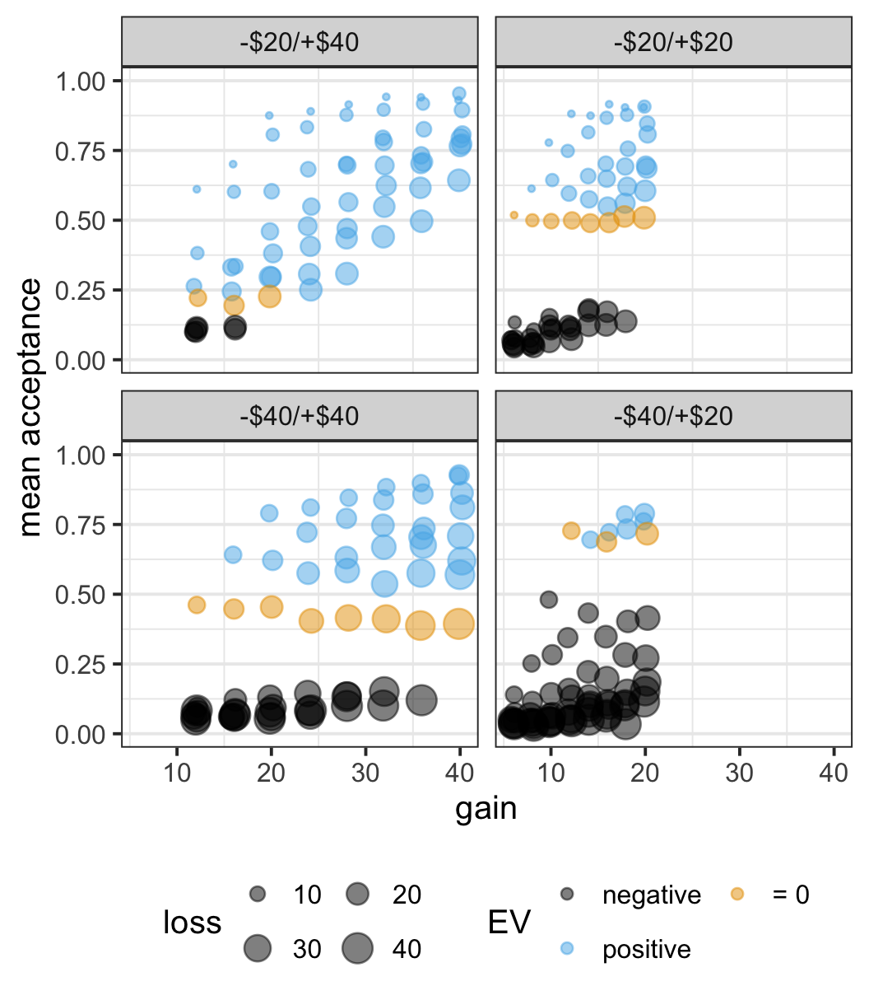

ggplot2 Exercises
4.8 ggplot2 Extended Example: Walasek & Stewart (2015) Exp. 1a & 1b
library("tidyverse")
ws1a <- read_csv("data/ws2015_exp1a.csv")
ws1b <- read_csv("data/ws2015_exp1b.csv")
ws1a <- ws1a %>%
mutate(subno = factor(paste0("e1a_", subno)))
ws1b <- ws1b %>%
mutate(subno = factor(paste0("e1b_", subno)))
ws1 <- bind_rows(ws1a, ws1b)
ws1 <- ws1 %>%
mutate(
response = factor(response, levels = c("reject", "accept")),
condition = factor(
condition,
levels = c(40.2, 20.2, 40.4, 20.4),
labels = c("-$20/+$40", "-$20/+$20", "-$40/+$40", "-$40/+$20")
)
)
glimpse(ws1)
#> Rows: 49,984
#> Columns: 6
#> $ subno <fct> e1a_8, e1a_8, e1a_8, e1a_8, e1a_8, e1a_8~
#> $ loss <dbl> 6, 6, 6, 6, 6, 6, 6, 6, 8, 8, 8, 8, 8, 8~
#> $ gain <dbl> 6, 8, 10, 12, 14, 16, 18, 20, 6, 8, 10, ~
#> $ response <fct> accept, accept, accept, accept, accept, ~
#> $ condition <fct> -$20/+$20, -$20/+$20, -$20/+$20, -$20/+$~
#> $ resp <dbl> 1, 1, 1, 1, 1, 1, 1, 1, 0, 1, 1, 1, 1, 1~only the symmetric lotteries that are shared across conditions separately for each participant and condition.
part_sum <- ws1 %>%
filter(loss == gain, loss %in% c(12, 16, 20)) %>%
group_by(condition, subno) %>%
summarise(mean_acc = mean(resp)) %>%
ungroup()
#> `summarise()` has grouped output by 'condition'. You can override using the `.groups` argument.
part_sum
#> # A tibble: 781 x 3
#> condition subno mean_acc
#> <fct> <fct> <dbl>
#> 1 -$20/+$40 e1a_109 0
#> 2 -$20/+$40 e1a_113 0
#> 3 -$20/+$40 e1a_125 0
#> 4 -$20/+$40 e1a_129 0
#> 5 -$20/+$40 e1a_13 0
#> 6 -$20/+$40 e1a_133 0
#> # ... with 775 more rows
ggplot(part_sum, aes(x = condition, y = mean_acc)) +
geom_point()
ggplot(part_sum, aes(x = condition, y = mean_acc)) +
geom_jitter(width = 0.2, height = 0.1, alpha = 0.25)
ggplot(part_sum, aes(x = condition, y = mean_acc)) +
geom_jitter(width = 0.2, height = 0.1, alpha = 0.25)
4.9 Quiz
Note: The pull-down menu for selecting an answer turns green after selecting the correct answer.
Exercise 4.1 Which variable is typically plotted on the y-axis?
- The independent variable
- The dependent variable
- The control variable
Answer:
Exercise 4.2 Consider you have data from an experiment with dependent variable score and independent variable condition. What would be the aes() call to plot this data in the conventional way?
aes(condition = x, score = y)aes(condition = y, score = x)aes(x = condition, y = score)aes(y = condition, x = score)
Answer:
Exercise 4.3 What is the appropriate way to handle outliers that are identified by a box-plot?
- Outliers should be removed from the analysis as they can influence the results to a large degree.
- Any real data point that is collected needs to be included in the analysis. Removing an outlier can be seen as an instance of data fabrication.
- We should repeat the analysis with and without outlier, to see if the results are robust to the presence or absence of the outlier.
Answer: